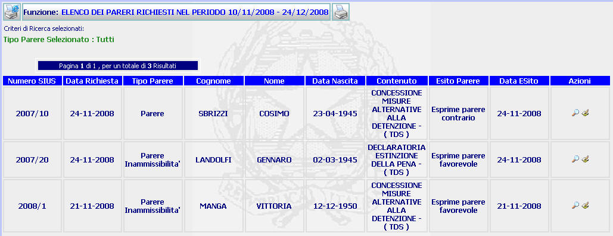

ELENCO DEI PARERI RICHIESTI NEL PERIODO ...: La funzione consente di visualizzare l'elenco (maturato a seguito di una ricerca richiesta parere) dei pareri richiesti in un determinato lasso temporale e di accedere al dettaglio richiesta parere oltre a consentire di tornare alla maschera di inserimento esito parere per modificare i dati precedentemente inseriti.
LE MASCHERE VIDEO
La funzione viene realizzata attraverso la maschera seguente in cui compare l'elenco dei pareri richiesti

COME FARE PER ...
| Per
visualizzare il
dettaglio richiesta parere
relativo ad uno dei pareri richiesti l'utente deve selezionare il pulsante
|
| Per
visualizzare la
maschera di
inserimento esito
parere
e modificare
i dati precedentemente inseriti
l'utente deve cliccare sul pulsante
|
| Per generare la stampa dell'elenco
l'utente deve selezionare il pulsante
|
PULSANTI
Oltre ai pulsanti
 e
e  , facenti entrambi parte del gruppo di
pulsanti di "Uso Comune
è presente il seguente pulsante:
, facenti entrambi parte del gruppo di
pulsanti di "Uso Comune
è presente il seguente pulsante:
|
PULSANTE |
DESCRIZIONE |
|
|
Questo pulsante ha lo scopo di visualizzare il dettaglio richiesta parere |
|
|
Selezionando questo pulsante si apre la maschera di inserimento esito parere ed è possibile modificare la data o l'esito del parere |